CANdelaStudio visualizes the relationship of requirements and diagnostic objects: whether properties are equal, whether the one contains child elements missing in the other etc.
The link status displayed in CANdelaStudio is based on the following assumptions:
(definition of “equal” see [RQ-R180])
| Type | Status | Condition |
|---|---|---|
| Heading | none conflict dangling equal | no “typed” descendant (= only heading and text requirement) AND not linked, else ChildConflict OR ChildNotPresent OR ForeignChild, else any child has status “dangling”, else |
| DiagInstRq | conflict | PropertyNotEqual OR ChildConflict OR ChildNotPresent OR ForeignChild OR DIDDiagInstConflict, else |
| dangling | any child has status “dangling”, OR Rq is not referenced by a DO, else |
|
| equal | ||
| DataRq | conflict | PropertyNotEqual, else |
| DTCRq | ||
| VSGRq | ||
| dangling | Rq is not referenced by a DO, else | |
| equal | (i.e. referenced, props equal) | |
| TextRq | none | Rq is not referenced by DO, else |
| equal | (referenced) |
(definition of “equal” see [RQ-R180])
| Type | Status | Condition |
|---|---|---|
| DiagClass | none | no descendant relevant for requirements, else |
| conflict | any child has status “conflict”, else | |
| dangling | any child has status “dangling”, else | |
| equal | ||
| DiagInst | none | DO does not have a reference to an Rq |
| AND (all children have status “none” OR all children have status “equal”) | ||
| conflict | PropertyNotEqual OR DIDDiagInstConflict (i.e. linked Rq has the special qualifier, OR not linked but uses a DID linked with a Rq that has the special qualifier), OR ChildConflict(*) OR ForeignChild, else |
|
| dangling | any child has status “dangling”, OR DO references non-existing Rq, else |
|
| equal | ||
| DID (CDS-39520 8.5 SP2) |
none | DO does not have a reference to an Rq AND (all children have status “none” OR all children have status “equal”) |
| conflict | PropertyNotEqual OR DIDDiagInstConflict (i.e. linked Rq does not have the special qualifier, OR used by a DiagInst linked with a Rq that has the special qualifier), OR ChildConflict(*) OR ForeignChild, else |
|
| dangling | any child has status “dangling”, OR DO references non-existing Rq, else |
|
| equal | ||
| DataObject, DTC, |
none | DO does not have a reference to an Rq |
| VSG | ||
| conflict | PropertyNotEqual else | |
| dangling | DO does have a reference, but to a non-existing Rq, else | |
| equal |
(*) If DO does not have a reference, and all children have status „none“ or „equal“, then ChildConflict occurs, since DO would have to reference the other parent.
| Type | Condition | Example |
|---|---|---|
| Heading | No typed descendants | 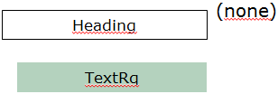 |
| Child conflict | 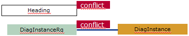 |
|
| Child dangling | 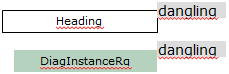 |
|
| DiagInstRq | Child conflict | 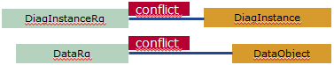 |
| Link mismatch at child | 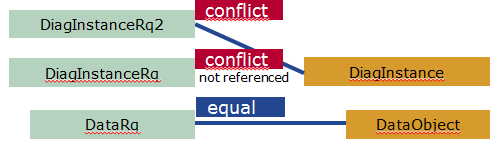 |
|
| Properties not equal | 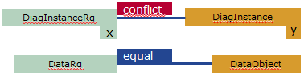 |
|
| Dangling | 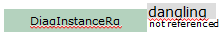 |
|
| DataRq | Linked, properties not equal | 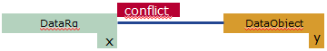 |
| Not linked | 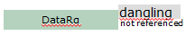 |
|
| Equal | 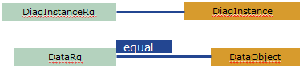 |
|
| Equal (even if linked with parent link mismatch) | 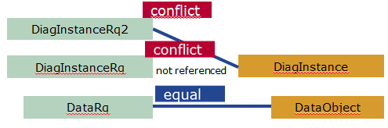 |
The following table illustrates the link status type icon and the tooltip for existing differences.
| LinkStatusDiff | Tooltip (GUI) |
|---|---|
| PropertyValueDiff | <Property name>: <ValueR> / <ValueDO> |
| ServicesDiff (at DiagInstRequirement/DataRequirement) | Services <name1>, … do not exist in diagnostic instance |
| TypeDiff (i.e. not compatible) | Type incompatible: requirement / diagnostic object |
| [RQ-R220-DIDDiagInstConflict] DIDDiagInstConflict | DiagClass "(DID)" reserved for DID without diagnostic instance |
| VehicleSystemGroupsDiff | Vehicle System Group <name of VSG> specified at requirement is not associated with linked diagnostic object |
| LinkStatusDiff | Tooltip (GUI) |
|---|---|
| ChildDiff type “dangling” | Unlinked (unresolved) requirement Reference to non-existing requirement ID at |
| ChildDiff type “conflict” | Differences in <child name> |
| ChildNotPresentDiff (only at requirements) | Linked diagnostic object contains |
| ChildNotPresentDiff (only at requirements) | Linked diagnostic object contains |
| ForeignChildDiff (at requirement) | Diagnostic object |
| ForeignChildDiff (at requirement) | Diagnostic object |
| ForeignChildDiff (at diagnostic object) |
|
| ForeignChildDiff (at diagnostic object) |
|
| danglingDiff (without further info) | Requirement is not linked with (resolved by) a diagnostic object. Diagnostic object refers to non-existing requirement ID |